To understand and manage attractive design and layouts, gaining an appreciation for the how to manage the CSS Box Model, Floats and Positioning is paramount. In this third and final refcard in the Core CSS series we turn our attention to the visual models that exist within CSS. You’ll learn not only about how visual models work, but how to troubleshoot and repair common problems too.
THE CSS VISUAL MODEL
The path to master today’s options for layout requires a significant study of the way that browsers work with the markup and style they’re interpreting. Current Web browsers implement what is known as the “CSS Visual Model” and lay out content based on a foundation of lines and boxes.
Lines and Boxes
It’s very likely you’ve heard the terms “inline” and “block” to describe HTML and XHTML elements. I’ll review their meaning here in the context of the model. An inline element by default is one that lies on the line with no subsequent break, unless the line has come to the end of available browser space in which to flow. Boxes that fall on a line in this fashion are called line boxes (Figure 1).
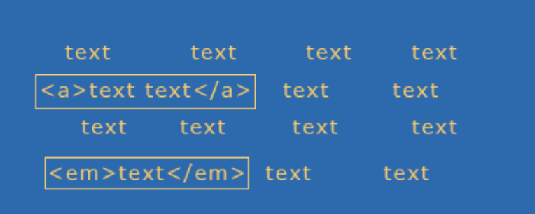
Figure 1. Imagine this is a series of text within a paragraph. Note how the inline elements do not cause a line break, and that they generate what is known as a “line box.”
A block level element by default defines a block, and there is a break between it and the next element.
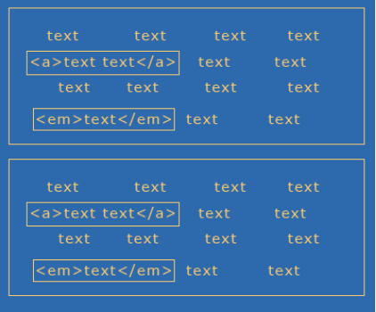
Figure 2. I’ve taken the original text and placed it within a paragraph element. Then, duplicated the element below, giving us two block boxes each containing inline boxes.
The CSS 2.1 Visual Model, continued
The most critical piece to understand is that every element creates a box. This box is the foundation for what is known as the box modeland is a critical component to understanding how to style elements within your document.
THE BOX MODEL
Every element box can be styled by the box components. In CSS 2.1, the Box Model consists of the content at center, and the top, right, bottom and left borders, padding and margin. The borders, padding and margin values for each or any side of the box are all optional and can be styled using CSS.
Boxes only go to the width and/or height of their content. You can control the width of block boxes by providing a specified width, but in the case of floats, you’ll need to use clearing and other techniques to “stretch” element heights.
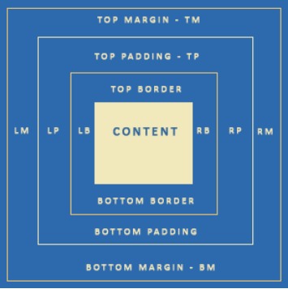
Figure 3. The CSS Box Model.
It’s important to point out that because of flow issues within a browser, inline elements can’t take a width. Therefore, while you can style other elements of an inline box, you can’t set an explicit width.
The Box Model, continued
Understanding the box model is critical because it gives designers a greater sense of what they can actually style. For example, you can add backgrounds or styled borders to the content surrounded by the box. A bit of a warning, though, the Box Model in IE6 and below does not follow the CSS box model. Therefore, it is necessary to use the correct DOCTYPE declaration (See Core CSS: Part I Refcard) in IE6 and IE7 to ensure the proper box model is in use. Otherwise, width measurements will be significantly different.
Margin backgrounds in boxes are transparent.
About Normal Flow
Normal flow at its most simplistic is simply the default flow of elements within a document. Here is an example of normal browser flow when we diminish the width of the browser, content will flow down and to the left (Figures 4-6). If we reverse the sizing and expand the browser, the content will flow up and to the right (simply reverse viewing order of Figures 4-6).
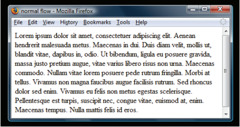
Figure 4. A paragraph in the normal flow.
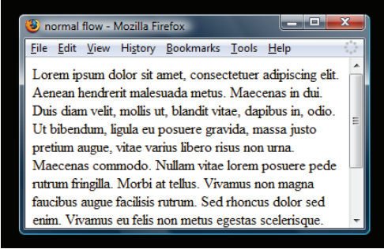
Figure 5. As the browser window is resized, text flows down and to the left. Notice the appearance of a scrollbar.
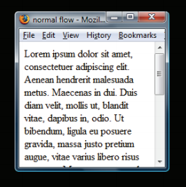
Figure 6. As we continue to make the browser window smaller, the paragraph reflows to fit the available width, while the text flows to the left in a downward manner, elongating the page.
A great way to gain an appreciation of normal flow is to simply create an HTML page with multiple paragraphs of text, and then size and resize the browser, watching how the flow behaves.
THE POWER AND PROBLEM OF FLOATS
Floats have become a very critical part of today’s CSS approach to visual layout. At first glance, the concept is very simple. While floating elements can assist us in doing all kinds of visual magic, there are challenges inherent to using them, including the way they are rendered in browsers.
The Basic Intention of Floats
Interestingly, floats were not really envisioned as a means for creating columns, although that’s often how we use them. Rather, they were developed to allow text to flow around another element which has been set to the left or the right, such as an image. This is something we see a great deal in design, as you can see in Figure 7.
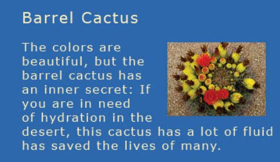
Figure 7. Floating allows for text to flow around a floated box. In this case, the image is floated right, and the text flows around the image.
The more we use floats for layout, the more challenged we are to find ways of controlling and breaking the manipulation of flow. Floated elements are shifted to the left or right of the normal flow. In the case of Figure 8, the image element is shifted to the left and therefore the text flows to the right.
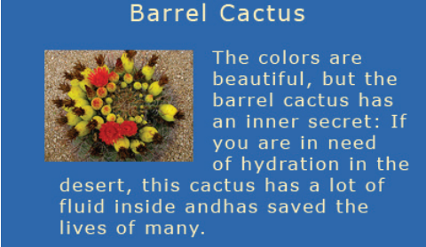
Figure 8. If the image is floated left, the text flows to the right.
It’s important to note that the markup stays the same—it’s only the CSS that changes. An example of the markup would be:
<p>The colors are beautiful, but the barrel cactus has an inner secret: if you are in need of hydration in the desert, this cactus has a lot of fluid inside and has saved the lives of many.
The CSS values will of be different in terms of manipulating the location of the image and the text flow, in the first case, the image is floated right, and in the second, left. Other elements will simply flow around the floated element once a float has been applied.
The Power and Problem of Floats, continued
Float Behavior
Understanding how floats behave (or don’t) within a browser environment is critical to troubleshooting a variety of issues, particularly when it comes to layout. While floats can be your best layout friend in many, many situations, knowing how floats behave in general will give you the upper hand!
The first thing to know is that floats are not in the normal flow. This means that other text and elements will continue to flow around the floated elements. In Figure 9, we see what happens if two elements are floated to the right and left. If not contained by another element that has an explicit width, the floated elements will continue to spread apart as the browser size increases, and come together as the browser size decreases.
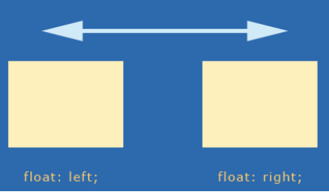
Figure 9. One box floated left, another right. If not contained, these boxes will continue to spread apart or get closer as the browser is resized.
If you’ve ever had text begin to unintentionally crawl up around the side of a floated box, the solution is float clearing (see “Clearing Floats” later in this reference).
In order to get floats to stack up nicely next to one another and avoid this behavior, we simply float them all in the same direction, typically left (Figure 10).
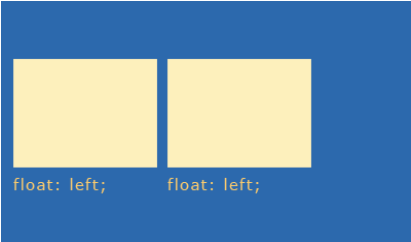
Figure 10. If we float elements in the same direction, they’ll line up next to each other. This is one way of creating columnar designs.
What happens if there’s not enough room within the browser (or the set width of a container element)? The subsequent floated element “falls off” the line and seeks the first available space (Figure 11).
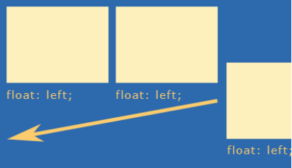
Figure 11. If an element cannot fit into the available space, the box will “fall off” the line and move to the first available space in the flow.
Float Behavior, continued
IE6 will drop the float down in if there is no space, incongruent with other browsers. If you’re developing in a Firefox environment, be sure to test constantly in IE as well. This issue, referred to as “tolerance” can be remedied by modifying widths slightly to accommodate IE.
Floats can be contained by setting explicit widths on containing elements, and on the floated boxes themselves. This doesn’t eradicate tolerance problems, but it gives you a more finite idea of how to mathematically arrange your elements (Figure 12).
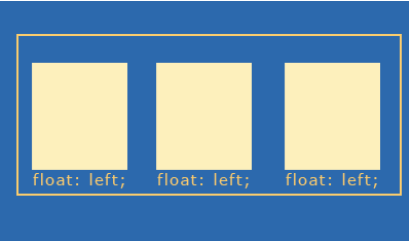
Figure 12. By containing elements and giving them a width, we can begin to create columns.
By containing elements, we can create contexts for interface components. If I wanted to create three columns as above, I could create three divs with specific widths, borders, padding and margins for each of the columns, and then set that within another div, which I would give an explicit width too, containing the three individual columns:
Of course, using divs for everything is overkill, because many HTML elements actually have this sort of mechanism built right in! Consider an unordered list with three list items:
As you can see, the <ul></ul> is an element, and therefore createsa box. We can then style that box as a container for the list items residing within. If there’s a logical reason to use a list, such as with navigation, or linked interface components, consider using semantic elements instead. This is called minimal markup and is an extremely helpful technique.
There’s no such thing as “div” based design. That term is popular but highly inaccurate. In CSS, it’s not that we use divs to create boxes, but that the element boxes are already there. Use divs only where necessary for containment and structure.
The Power and Problem of Floats, continued
Clearing Floats
So what happens when you want to stop the flow of text, or a floated box, and return to the normal flow? You have to clear your floats (Figure 13).
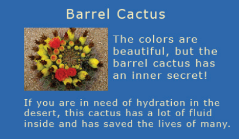
Figure 13. Clearing floats is the process of returning the next consecutive element to the normal flow.
In terms of floats for layout, if you want to be able to have content below floated elements, such as a traditional “footer” where site information will go, clearing is necessary. This allows the subsequent elements to return to the normal flow (Figure 14).
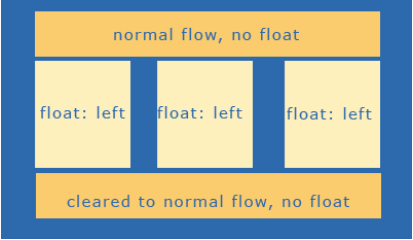
Figure 14. Once the float is properly cleared, we return to the normal flow, which is how we can create a footer beneath the floated columns.
There are numerous ways to clear floats. A very popular one is the creation of a clear class and the use of the property “clear” and a value of both:
People will then use a div or a break element to clear the float:
My preference of the two is the break element, as an empty div is a non-empty element with nothing inside it. While still slightly presentational, at least “break” has meaning in this case (Figures 15 and 16).

Figure 15. The float is properly cleared. Notice how the column to the left doesn’t fill the entire available space –this is normal behavior. The important issue is that the bottom-most eleiment is cleared and does not try to “creep up” into the available space.
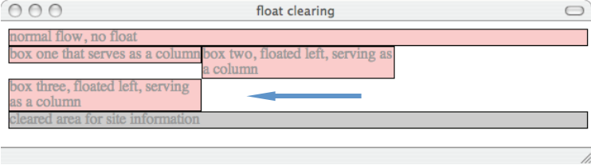
Figure 16. Even when a tolerance problem forces the far right column off the line, notice that it does not encroach upon the space above it. This is because it’s not in the normal flow. Also, note t because it’s not in the normal flow. Also, note that despite the tolerance issue, the bottom-most element remains clear of the floated elements.
CSS POSITIONING
CSS positioning is a powerful piece of CSS that allows us to position elements in a variety of ways. One of the problems with positioning is that it has not been well articulated, particularly relative positioning, over the years. It took me a long time to understand exactly what relative positioning really was, or was useful for. Therefore, I’ll start with relative positioning and work from there.
Relative
If the fathers of CSS had been thinking about naming it a little more carefully relative positioning would be called “offset” positioning.
Essentials for relative positioning:
Imagine three paragraphs of text in the normal flow (Figure 17). Using CSS I’ve hidden the visibility of the text in the second paragraph to make the visualization of relative positioning clearer.
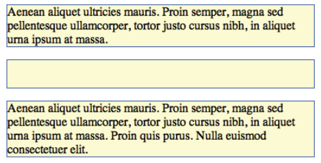
Figure 17. Three paragraphs in the normal flow.
Here’s some CSS that offsets the paragraph using relative positioning:
The offset can be seen in Figure 18.
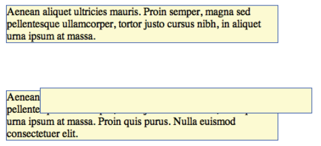
Figure 18. The second paragraph, positioned relatively.
At this point you’re probably wondering, what is that paragraph being positioned to? This is why I say the term relative in this instance is so confusing. The answer is not what you’d expect. A relatively positioned element is positioned in relation to its location in the normal flow. In other words, the browser still “sees” the positioned element in the flow but on the design surface, it’s visually moved from where it would have been. This is why the big space is left behind, almost a ghost of the paragraph. The browser interprets the element as being in the normal flow.
Absolute
Absolute positioning is a little clearer in its terminology, and perhaps a bit more logical in its behavior. An absolutely positioned element:
- Is removed from normal flow
- Is positioned in relation to
- — a positioned parent element
- — the root element of HTML
- Subsequent content flows into the now available space
CSS Positioning, continued
Here’s the CSS used to position the box:
If we briefly revisit normal flow (Figure 19), we can compare the before and after positioning.
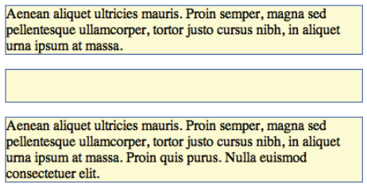
Figure 19. Normal flow, again.
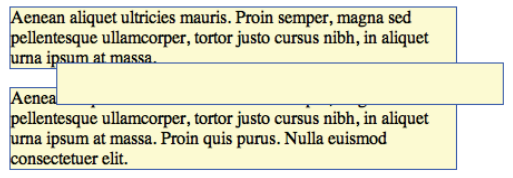
Figure 20. The second paragraph, positioned absolutely. Notice how the element is positioned absolutely from the top, left area (this can be the HTML element or another element, such as a div, that is positioned). The element is taken out of the normal flow, which is why the subsequent paragraph flows up into the available space, unlike relative positioning.
Fixed
Fixed positioning is actually a subset of absolute positioning and can be very useful in creating static elements on the design surface while other elements flow behind.
Elements that are fixed are done so in relation to the browser chrome (Figure 21).
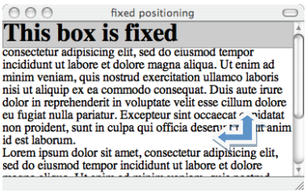
Figure 21. The h2 gray box is fixed to the left and top of the browser chrome.
As I scroll the browser, the box remains fixed (Figure 22).
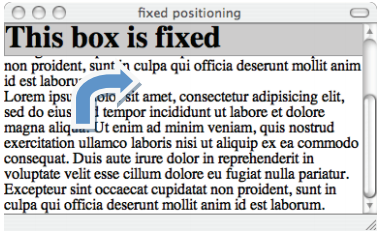
Figure 22. As I scroll, the text flows under the positioned box. True to its term,the box remains fixed.
Fixed positioning isn’t implemented in IE6, although IE7 does implement it, as does IE8. If we were viewing this in IE6, the fixed box would simply scroll off just as if it were a non-positioned element.
Creating a Positioning Context: “Relatively Absolute”
One technique that is very helpful to designers who are using a combination of floats and positioning to accomplish their layouts has been coined ”Relatively Absolute”.
Creating a Positioning Context: “Relatively Absolute”, continued
Remember, a relatively positioned box creates an instance of normal flow, while it itself remains in the normal flow of the document. Therefore, creating areas that stay together as a unit can be accomplished by creating a containing element that is relatively positioned without offset values:
I then styled the list items and links:
This CSS removes the bullets from the list items. I then absolutely position each list item box as I see fit, resulting in a box in the normal flow with three links (Figure 23).
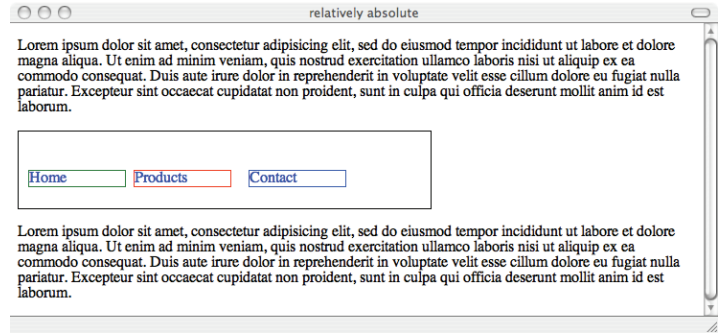
Figure 23. Relatively absolute: Using a combination of positioning to keep like items together within normal flow.
If the browser is resized, everything will flow normally, but the absolutely positioned elements will retain their position within the relative box.
Stacking Order: z-index
An important property in CSS is z-index. This property provides us a third visual dimension of depth with any positioned element (note that the element must be positioned to accept a z-index). This way, we can stack boxes and have them overlap as we’d like.
In Figure 24, I created 3 boxes and used the following CSS to cause them to overlap naturally, without using a z-index. This is the default stacking order behavior when no z-index is involved.

Figure 24. Default stacking order.
I can reverse the stack order using the z-index:
Stacking Order: z-index, continued
Figure 25 shows the results.
Figure 25. Reversing the stack using z-index.
It is important to understand that the higher the number, the “closer” to the screen the item appears. Also, you do not have to use sequential numbers. In fact, designers who want to be very certain that a given element is always on top of a stack might use numbers significantly higher than those lower in the stack:
Figure 26 shows the results, with the red box coming to the foreground.
Figure 26. Bringing a box to the foreground with z-index.
Another point to make regarding z-index is that each positioning context allows for a new instance of z-index. This is why you might see several instances of the same numbers that result in different stacking orders—it just depends on what the designer or developer is attempting to achieve.
CORE CSS WRAP-UP
The goal of the Core CSS series is to ensure that readers are empowered to understand the areas of CSS that are unclear and confusing, as well as give insight into the way browsers behave. Understanding CSS and how browser behaviors influence the work you do empowers you to envision, create and code to a high quality that will allow the sites and applications you design to be manageable, scalable and attractive, too.